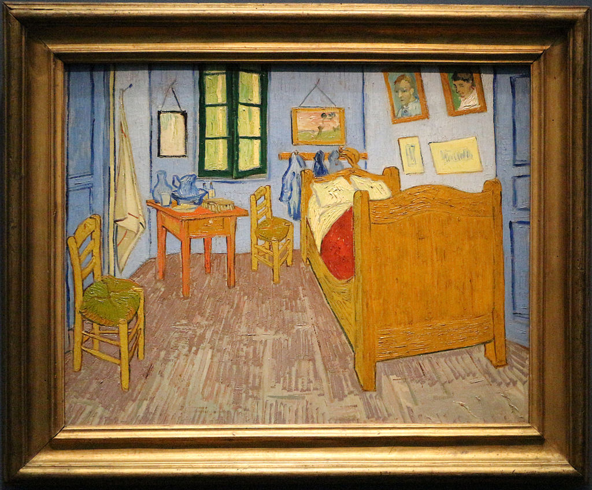
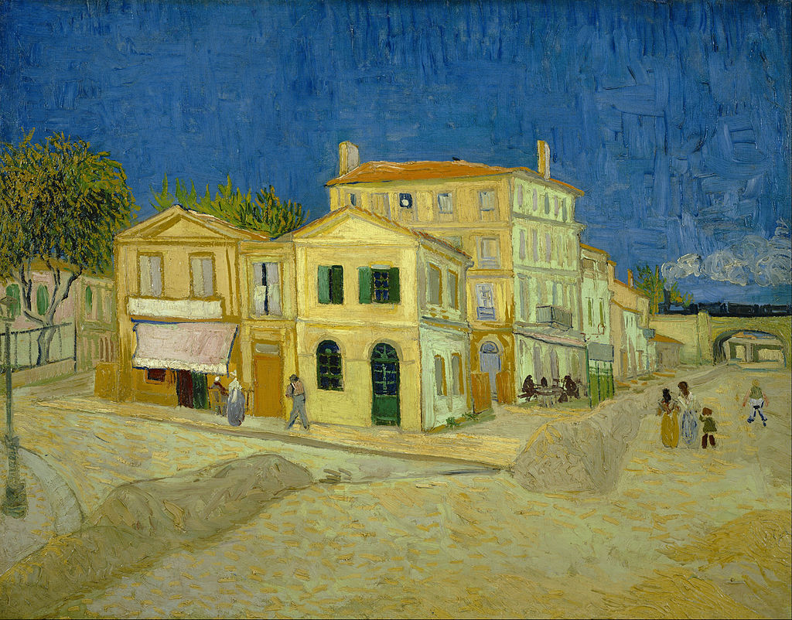

Vincent
van Gogh, CC BY 3.0, via Wikimedia Commons
Vincent van Gogh's painting "The Bedroom," or "Bedroom in Arles," is one of his most famous and emotionally
resonant works, painted in 1888 during his time in the Yellow House in Arles, France.
"The Bedroom" came to life during a period of intense creativity but also significant personal struggle. It was
painted shortly after Paul Gauguin, whom van Gogh famously lived and collaborated with, left Arles—an event that
deeply affected him.
Van Gogh actually painted three versions of "The Bedroom," each a bit different, reflecting various stages in
his life and shifts in his emotional state. These variations are fascinating as they offer insights into his
evolving perspective on his surroundings and his mental health.
Late in the summer of 1888, Van Gogh moved in to the 'Yellow House' in Arles, in the South of France. He bought
rustic furnishings with money from his brother Theo.
The painting depicts van Gogh's bedroom in the house. Van Gogh made this painting of his bedroom after a few days
of rest and recovery from hard work outdoors.
It is a window into van Gogh’s life and emotions during a time of turmoil and mental health struggles.
Below is another one of Van Gogh's paintings, The Yellow House. The window in the bedroom is seen here from the
outside.

Vincent
van Gogh, Public domain, via Wikimedia Commons
3D walkthrough of Bedroom in Arles
Late in the summer of 1888, Van Gogh moved in to the 'Yellow House' in Arles, in the South of France. He bought
rustic furnishings with money from his brother Theo.
The painting depicts van Gogh's bedroom in the house. Van Gogh made this painting of his bedroom after a few days
of rest and recovery from hard work outdoors.
It is a window into van Gogh’s life and emotions during a time of turmoil and mental health struggles.
Below is another one of Van Gogh's paintings, The Yellow House. The window in the bedroom is seen here from the
outside.
"The Bedroom, Vincent Van Gogh 1888." by Alexei MKLT is licensed under Creative Commons
Attribution.
The painting shows van Gogh’s actual bedroom, depicted with an honesty and directness that’s totally typical of
him. The room's furnishings are simple—a bed, two chairs, a table, and a washbasin. But it’s the way he paints
them that adds a layer of depth.
"The Bedroom" came to life during a period of intense creativity but also significant personal struggle. It was
painted shortly after Paul Gauguin, whom van Gogh famously lived and collaborated with, left Arles—an event that
deeply affected him.
Van Gogh invites us into his private world, sharing a space that was both a sanctuary and a cell. As viewers, we
get a rare glimpse of his life behind the canvas—his struggles, his environment, and how deeply his surroundings
impacted his art.
{kind=link}
_-_Google_Art_Project.jpg){kind=link}